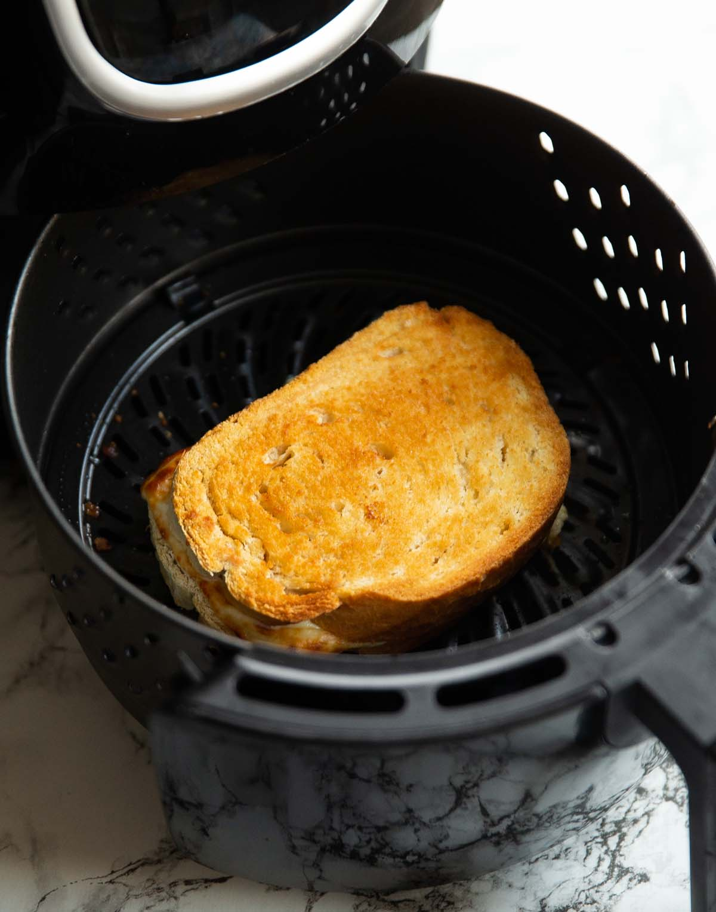

Why my Guide is Important
My guide help teaches people how to make a quick and easy prefectly cristy grilled cheese in an air fryer
STEPS
- Spread a thin, even layer of softened butter on one side of two slices of bread. This ensures a perfectly golden, crispy exterior.
- Layer your favorite cheese on top, then close the sandwich with the second slice, fat-side up.
- Heat the air fyer to 390 degrees. Cook for 3–4 minutes until the bottom is deep golden brown. Flipping too early or using high heat will burn the bread before the cheese melts.
- Carefully flip the sandwich with a spatula or use your hand. Cook the other side for another 3-4 minutes until the cheese is oozy and the bread is crunchy.
